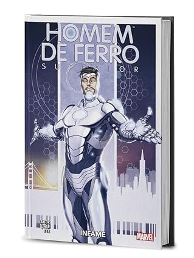

<html lang="en">

</html>

<head>
    <meta charset="UTF-8">
    <meta name="viewport" content="width=device-width, initial-scale=1.0">
    <link rel="stylesheet" href="pagina.css">
    <link rel="website icon" type="png" href="imagens/logo.png">
    <link rel="stylesheet" href="css-geral.css">
    <title>Pagina principal</title>
</head>

<body>
    <header>
        <div class="container">
            <h1>Bem-vindo à Manga Haven</h1> <a href="../tela-inicial/pagina-principal.html"></a>
            <nav>
                <ul>
                    <li><a href="../tela-inicial/pagina-principal.html">Home</a></li>
                    <li><a href="../tela-inicial/sobre-site.html">Sobre</a></li>
                    <li><a href="../tela-de-login/tela-de-login.html">Sair</a></li>
                </ul>
            </nav>
        </div>
    </header>
    <br><br><br><br><br><br><br><br><br><br><br><br><br><br>
    <main>
        <section class="produtos" id="dc">
            <div class="container">
                <h1> Homem De Ferro Superior</h1>
                <div class="grid-produtos">
                    <div class="item-produto"> 
                    </div>
                </div>
            </div>
            <div class="item-produto">
                <h5>Homem De Ferro Superior</h5><br>
                <h5>Avalições:★★★☆☆(1042)
                </h5><br>
                <h5>Detalhes:</h5>
                <p>Autor:Dan Slott</p>
                <p>Ano de Lançamento: 8 de abril 2022</p>
                <p>Descrição: Homem de Ferro: Superior explora uma nova fase para Tony Stark, onde ele enfrenta desafios
                    inéditos e inovações tecnológicas avançadas. A trama mergulha nas complexidades do papel de Stark
                    como herói e líder, destacando suas batalhas mais intensas e suas conquistas tecnológicas. </p> <br>
                <a href="https://www.amazon.com.br/Homem-Ferro-Superior-Marvel-Deluxe/dp/6559604128"
                    target="_blank">Mais
                    Detalhes</a>
                <br>
                <h5>Sobre:</h5>
                <p>
                    Quanto você pagaria pela perfeição? Beleza? Imortalidade? Tony Stark sabe, e ele está pronto para
                    dar a você - mas a um preço terrível! O efeito AXIS mudou Tony: ele está mais estiloso, confiante e
                    astuto do que nunca.
                <h4 id="valor">R$80,99</h4><br>
                <a href="../carinho-de-compras/homem-de-ferro.html">Adicionar ao carinho</a><br>
            </div>
        </section>
        <div>
        </div>
        </section>
    </main>

    <footer>
        <div class="container">
            <p>&copy; 2024 Manga Haven</p>
        </div>
    </footer>
</body>

</html>